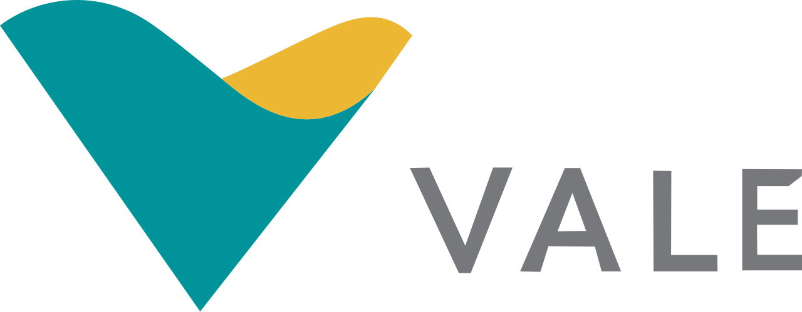

Social
- Emprego e renda
- Saúde pública
- Educação
- Pobreza e vulnerabilidade
- Segurança e violência
Fontes previstas: Siconfi, RAIS/CAGED, DATASUS, INEP, CadÚnico, Atlas da Violência
Em breveO Observatório da CFEM é uma plataforma digital dedicada a monitorar, analisar e tornar públicos os recursos da Compensação Financeira pela Exploração de Recursos Minerais nos municípios de Parauapebas e Canaã dos Carajás.
O Observatório acompanha o dinheiro da mineração em cinco degraus: quanto foi arrecadado, quanto deveria chegar às prefeituras, quanto chegou, onde foi gasto e o que mudou no município.
Parauapebas e Canaã, 2022 a 2026 · Agência Nacional de Mineração
Ver a arrecadação →60% do arrecadado · estimativa pela regra de distribuição da ANM
Ver a distribuição →Receita de CFEM registrada pelas prefeituras no Tesouro Nacional
Em construçãoFunções e subfunções do orçamento municipal: saúde, educação, segurança…
Em construçãoIndicadores sociais, econômicos, ambientais e institucionais
Conhecer os eixos →Integrado ao Programa de Educação Ambiental (PEA) e apoiado pela Vale, o Observatório oferece à sociedade instrumentos concretos para acompanhar, analisar e influenciar a aplicação das compensações financeiras nos territórios de Parauapebas e Canaã dos Carajás.
Indicadores por jurisdição e bairro, com espacialização territorial dos dados da CFEM.
Correlações, séries históricas e visualizações interativas dos recursos minerais.
Documentos técnicos personalizados para cidadãos, gestores e pesquisadores.
Marketplace de projetos comunitários para fortalecer o desenvolvimento sustentável.
Cada eixo vai cruzar o gasto das prefeituras por função e subfunção (Siconfi) com indicadores de resultado, a partir da cota da CFEM que deveria chegar a cada município.
Fontes previstas: Siconfi, RAIS/CAGED, DATASUS, INEP, CadÚnico, Atlas da Violência
Em breveFontes previstas: IBGE (PIB municipal), Siconfi, ANM
Ver a distribuiçãoFontes previstas: MapBiomas, SEEG, SNIS, Siconfi
Em breveFontes previstas: IBGE (MUNIC), Tesouro Nacional, legislação municipal
Em breveA plataforma reúne tecnologia, dados e educação em uma interface acessível para todos os perfis de usuários.
Visualizações dinâmicas da arrecadação e da distribuição da CFEM, com filtros por período, município, substância e comparação com as médias da região, do Pará e do Brasil.
IA ética e explicável, alimentada por dados validados, para responder perguntas e resumir informações com total transparência.
Documentos técnicos sob medida para cidadãos, conselhos, gestores públicos, educadores e pesquisadores.
Espaços de escuta ativa, consultas públicas e acompanhamento de demandas comunitárias, alinhados ao PEA.
Divulgação de projetos comunitários, fortalecendo o desenvolvimento sustentável e a articulação entre atores locais.
Ações formativas, cartilhas e vídeos educativos para comunidades e lideranças, desenvolvendo letramento digital e capacidade analítica.
“O Observatório da CFEM representa um compromisso concreto com a transparência e o desenvolvimento sustentável dos territórios onde a atividade minerária ocorre, colocando dados e inteligência a serviço das comunidades.”

Parceiro estratégicoA riqueza mineral do território pertence à sua comunidade. O Observatório da CFEM existe para que você saiba como ela está sendo usada.
Sede das minas de ferro de Serra Norte, no Complexo de Carajás, Parauapebas foi o município que mais arrecadou CFEM no Brasil em 2023 e 2024. O Observatório acompanha como esses recursos se convertem em qualidade de vida para a população.
Onde ficam a mina de ferro S11D e a mina de cobre do Sossego, Canaã quase triplicou de população entre 2010 e 2022 (de 26,7 mil para 77,1 mil habitantes). O Observatório mapeia os impactos socioeconômicos e ambientais dessa expansão sobre o território e as comunidades.
Fontes: Agência Nacional de Mineração (arrecadação da CFEM, valores nominais) e IBGE (Censo 2022).
O que é, quem paga, como é calculada, para onde vai e em que pode ser usada a compensação financeira da mineração.
Ver os dados na plataformaA Compensação Financeira pela Exploração de Recursos Minerais é o que as mineradoras pagam ao poder público pelo aproveitamento dos minérios, que pertencem à União. Ela está prevista na Constituição de 1988 e funciona como os royalties da mineração: parte da riqueza retirada do subsolo volta para a sociedade, principalmente para os municípios onde há produção.
Paga quem explora o minério. A lei lista:
Na venda, a CFEM incide sobre a receita bruta, descontados os tributos sobre a comercialização. Quando o minério é consumido ou exportado, usa-se um valor calculado a partir do preço de mercado. Sobre essa base, aplica-se a alíquota de cada substância:
| Substância | Alíquota |
|---|---|
| Rochas, areias, cascalhos e saibros para uso imediato na construção civil; rochas ornamentais; águas minerais e termais | 1% |
| Ouro | 1,5% |
| Diamante e demais substâncias | 2% |
| Bauxita, manganês, nióbio e sal-gema | 3% |
| Ferro | 3,5% |
A alíquota do ferro pode ser reduzida pela ANM, excepcionalmente, para até 2% em minas de baixo desempenho econômico. Como Parauapebas e Canaã produzem sobretudo ferro, é essa alíquota que mais pesa na região.
Desde 2018, pela Lei 13.540/2017, o valor arrecadado é dividido assim:
Até 2017 a divisão era 65% para o município, 23% para o estado e 12% para a União, sem cota para afetados. Veja os valores de cada destino na Análise da distribuição.
São municípios que não produzem minério, mas convivem com a atividade. A lei considera afetados os municípios cortados por ferrovias ou dutos que transportam minério, os que têm operações portuárias de embarque e desembarque de minério e os que abrigam estruturas de mineração, como pilhas de estéril, barragens de rejeitos e instalações de beneficiamento. A cota de 15% é repartida pela ANM entre esses municípios, que podem estar em outros estados.
Segundo a ANM, os recursos da CFEM não podem ser usados para pagar dívidas nem o quadro permanente de pessoal. Devem ir para projetos que, direta ou indiretamente, beneficiem a comunidade local, como melhorias de infraestrutura, qualidade ambiental, saúde e educação.
A Lei 13.540/2017 também orienta que pelo menos 20% das cotas de estados e municípios sejam aplicados, preferencialmente, em diversificação econômica, desenvolvimento mineral sustentável e desenvolvimento científico e tecnológico. Isso importa porque o minério acaba: a CFEM é a chance de preparar a economia local para depois da mineração.
Porque são os dois municípios que mais arrecadam CFEM no Brasil: em 2025, Canaã dos Carajás foi o 1º (R$ 1,25 bilhão) e Parauapebas, o 2º (R$ 1,10 bilhão). Juntos, responderam por cerca de 30% de toda a CFEM do país naquele ano. Acompanhar como esse dinheiro é aplicado é central para o desenvolvimento da Região de Integração do Carajás.
A arrecadação vem dos dados abertos da ANM, com série desde 2003. A plataforma verifica o portal da ANM todos os dias e só publica dados novos depois de conferir se estão completos. A distribuição é estimada aplicando a regra de cada ano ao valor arrecadado. Os dados de receitas e despesas das prefeituras virão do Siconfi, do Tesouro Nacional.
Ainda não. A Análise da arrecadação mostra o que as mineradoras pagaram. A Análise da distribuição estima quanto cabe a cada destino pela regra legal, o que pode diferir do valor efetivamente creditado (por prazos, retificações ou critérios próprios no caso dos afetados). O próximo passo do Observatório é comparar essa estimativa com a receita que cada prefeitura declarou ao Tesouro Nacional.
Não. Todos os valores estão em reais da época (valores nominais). Ao comparar anos distantes, como 2005 e 2025, lembre que a inflação do período reduz o poder de compra do dinheiro.
Fontes: Constituição Federal (art. 20, § 1º), Lei 7.990/1989, Lei 8.001/1990, Lei 13.540/2017, Decreto 9.407/2018 e Agência Nacional de Mineração. Valores: arrecadação da CFEM (ANM), em reais nominais.
Versão de demonstração: em breve o assistente consultará a base completa do Observatório.